Vergangene Visionen
aus der Feder von Friedrich Wilhelm IV.
Die Visualisierung zeigt den Bestand historischer Zeichnungen von Friedrich Wilhelm IV. entlang einer thematischen und zeitlichen Einordnung.

Die Stichwörter stellen die häufigsten Themen in den Zeichnungen Friedrich Wilhelms IV dar. Klicken Sie auf die Stichwörter, um die Auswahl der Zeichnungen thematisch einzugrenzen.

Die Zeichnungen sind entlang einer Zeitleiste entsprechend ihrer Entstehungsjahre positioniert. Unter den Jahreszahlen befinden sich weitere historische und biographische Informationen.
Zoomen Sie mit Ihrem Touchpad oder Scrollrad in den Bereich der Zeichnungen und Zeitleiste, um mehr Details zu sehen. Klicken und ziehen Sie den Hintergrund, um den Sichtbereich zu verschieben.
Past Visions
penned by Frederick William IV
The visualisation shows the collection of historical drawings by Frederick William IV alongside a thematic and temporal arrangement.
The keywords represent prominent topics in the drawings by Frederick William IV. Click on the keywords in order to thematically narrow down the selection of drawings.
The drawings are positioned on the timeline according to their year of origin. Below the year dates, historical and biographical information is displayed.
You can either zoom with your touchpad or scroll wheel in the areas of the drawings and the timeline in order to see more details. Klick and drag the background in order to adjust the visible area.